Infection control & isolation
How infections spread, how the body fights back, and what the nurse does to break the chain.
The chain of infection
Know all six links in order.
The host can then become the next reservoir, so the chain loops.
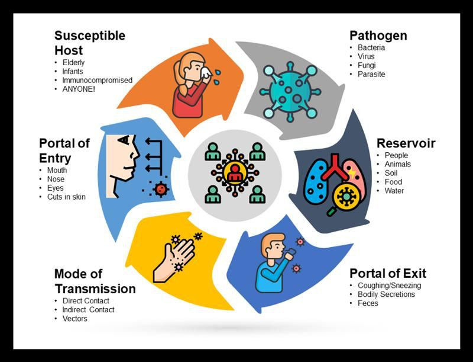
| Link | How the nurse breaks it |
|---|---|
| Infectious agent | Disinfect, sterilize, clean; antimicrobials |
| Reservoir | Hand hygiene, preop skin prep, cleaning the environment per protocol |
| Portal of exit | Contain body fluids with drains and dressings; decrease secretions |
| Mode of transmission | Hand hygiene and barrier devices (PPE) |
| Portal of entry | Keep skin and mucosa intact; asepsis with invasive devices |
| Susceptible host | Immunizations, nutrition, hygiene, blood glucose control |
What makes a host more susceptible
Age; underlying disease (HIV/AIDS, malignancy, transplant); immunosuppressants, antirejection meds, antineoplastics, antimicrobials, corticosteroids, PPIs; surgery; radiation; indwelling devices (ET tubes, urinary and central catheters, pacemakers, artificial joints).
Colonized means the organism lives in the body without causing problems. A colonized person can still be a reservoir and spread it. Virulence is how good an organism is at making people sick.
A practice question favorite: clients, staff, furniture, and equipment are reservoirs. Bacteria and viruses are agents, not reservoirs.
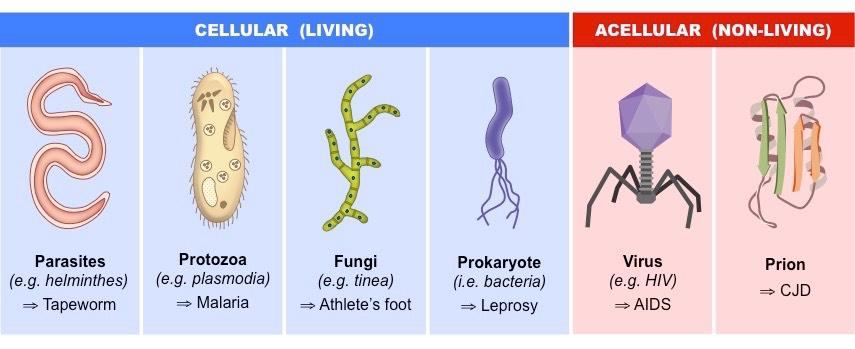
Modes of transmission
| Mode | How it spreads | Examples |
|---|---|---|
| Direct contact | Person to person, nothing in between | Blood into a nurse's open cut; scabies without gloves |
| Indirect contact | Through a contaminated object or person | Drainage on a bed rail; same gloves between clients; shared BP cuff |
| Droplet | Large droplets (>5 microns) into a host's mucosa, within 3–6 ft | Influenza, pertussis, RSV, adenovirus, rhinovirus |
| Airborne | Small particles (<5 microns) stay suspended and travel far | TB, measles, varicella |
| Vehicle | One contaminated source to many people | E. coli on produce, contaminated water |
| Vector-borne | An animal carries it without being infected | Mosquitoes, rats |
ATI gives three different droplet distances (3 ft, 3–6 ft, and 6–10 ft). This guide uses 3–6 ft.
Body defenses
Physical & chemical barriers
- Intact skin: largest organ, first line of defense
- Moist mucous membranes (humidify O2)
- Tears, sweat, cilia, coughing
- Stomach acid, enzymes, normal GI flora
- Longer male urethra; vaginal pH
Nonspecific (innate)
- Neutrophils and macrophages
- Work as phagocytes: eat and destroy microbes
- Responds right away to anything
- No memory
Specific (acquired)
- Antibodies (IgA, IgD, IgE, IgG, IgM)
- B and T lymphocytes
- Remembers a specific invader after exposure
- Takes time to respond
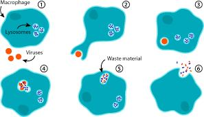
Protecting the skin barrier: gentle cleansers, moisturizers, less tape, no irritants. Detergents strip the stratum corneum (about half back in 6 hr, fully back in 5–6 days).
Passive immunity comes from an outside source (maternal antibodies, immunoglobulin) and is temporary. Active immunity is made by the body after exposure and lasts.
Inflammation
The 4 steps
The 5 cardinal signs of inflammation
Example: a skinned knee is warm, red, swollen, painful, and hard to bend.
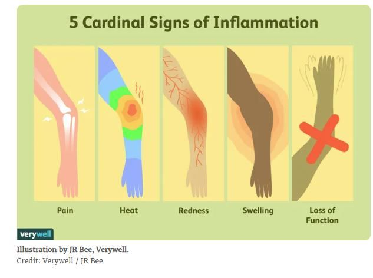
Infectious triggers
- Viruses
- Bacteria
- Other micro-organisms (fungi)
Noninfectious triggers
- Physical: burns, frostbite, trauma, foreign bodies, radiation
- Chemical: glucose, fatty acids, alcohol, toxins, irritants
- Biological: damaged cells
- Psychological: excitement
What happens at a wound
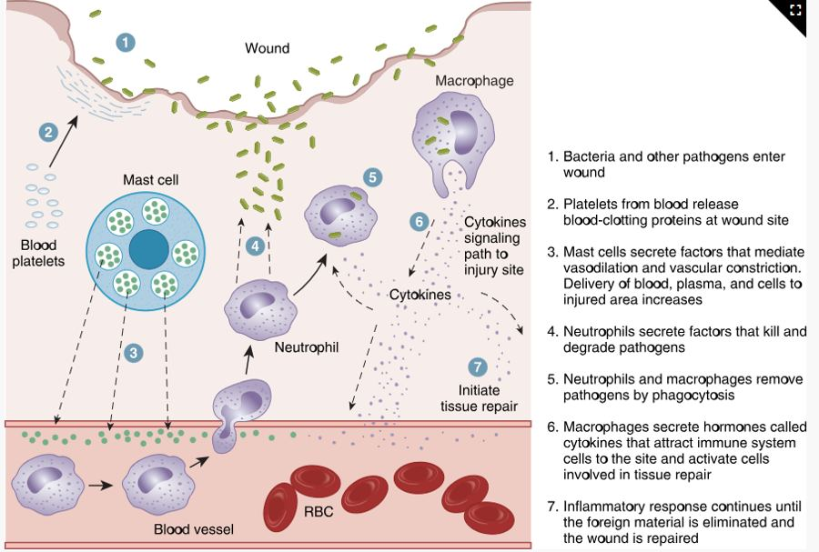
Meds: antihistamines (diphenhydramine) block histamine and prevent swelling; NSAIDs (ibuprofen) reduce painful inflammation. Acute inflammation is one event; chronic repeats (asthma, GERD) and can lead to tissue destruction and cancer.
Stages and types of infection
- Incubation: exposure to first symptom. No symptoms, but labs may show changes. Seconds to weeks, depending on the agent.
- Prodromal: vague symptoms: fever, aches, poor appetite, malaise.
- Acute illness: disease-specific symptoms are obvious; infection is severe.
- Decline: symptoms ease; strength returns.
- Convalescence: back to the old or a new balanced state of health; may have lasting effects.
"I Prefer Avoiding Disease Completely": Incubation, Prodromal, Acute, Decline, Convalescence.
Local
- Confined to one area
- Pain, tenderness, edema at the site
- Topical or oral antibiotics
Systemic
- Spreads through the bloodstream
- Fever, ↑ HR and RR, malaise, fatigue, anorexia, N/V, enlarged lymph nodes
- IV antibiotics and monitoring
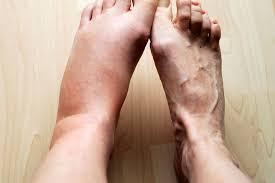
Chills mean temperature is rising; diaphoresis means it is falling.
Older adults may only show confusion, agitation, or incontinence, so infection can be advanced before anyone notices.
Sepsis: a systemic inflammatory response to serious infection that can cause organ failure and shock. Blood cultures confirm it. Highest risk: very young, very old, weak immune system, severe trauma.
Shingles (herpes zoster): reactivated varicella. Painful one-sided vesicular rash along a dermatome. Isolate until the vesicles crust over; keep away from infants, pregnant people who haven't had chickenpox, and immunocompromised clients. Acyclovir works best early. The two-dose recombinant vaccine prevents it but doesn't treat it. Pain lasting over 3 months after the rash is postherpetic neuralgia.
Diagnostic tests
WBC count: 5,000–10,000/mm³. Above 10,000 (leukocytosis) = inflammation or infection. Below range = can't fight infection well (neutropenia).
| WBC type | Expected | Job |
|---|---|---|
| Neutrophils | 55–70% | First responder; eat bacteria. Immature ones (bands/stabs) rising = left shift = ongoing infection |
| Lymphocytes | 20–40% | Chronic bacterial and acute viral infections; T and B cells |
| Monocytes | 2–8% | Clean up tissue damage; make interferon |
| Eosinophils | 1–4% | Allergies and parasites |
| Basophils | 0.5–1% | Release histamine, serotonin, heparin (mast cells) |
"Never Let Monkeys Eat Bananas": most to least common, neutrophils → basophils. The differential always totals 100%.
- ESR: nonspecific; expected 15–20 mm/hr, above 20 = active inflammation. Varies by age and sex.
- CRP and procalcitonin: nonspecific inflammation markers. Not standardized, so use the same lab for repeat draws.
- UA → C&S: WBCs in the urine lead to a culture and sensitivity. The culture names the organism; the sensitivity shows which antibiotic works. Collect cultures before antibiotics.
- Chest x-ray: confirms pneumonia or atelectasis but not the type.
- Antibody test: shows past exposure, not current infection. Antigen test and NAAT detect the pathogen itself.
- Gallium scan: radioactive tracer gathers where WBCs collect.
Hand hygiene
Alcohol-based hand rub
- Preferred in most situations
- At least 60% alcohol
- Rub all surfaces until dry (20–30 sec)
Soap and water
- Hands visibly soiled
- Spores, like C. diff: alcohol doesn't remove them
- At least 20 seconds (Happy Birthday twice)
The slides say 15–30 seconds, but instructors confirmed 20 seconds for exams.
Handwashing essentials: soap, running water, friction. Hands below elbows, warm water, wash 1 in above the wrist, clean under nails (the subungual area holds the most microbes), rinse fingertips down, pat dry fingertips to wrists, turn the faucet off with a dry paper towel.
Nails: natural, ≤0.25 in, unpolished. No artificial nails; chipped or gel polish harbors bacteria.
Asepsis
| Medical asepsis | Surgical asepsis | |
|---|---|---|
| Also called | Clean technique | Sterile technique |
| Goal | Reduce the number of microbes | No microbes present; prevent SSIs |
| Examples | Hand hygiene, isolation precautions, oral meds, NG tubes, hygiene | Catheter insertion, central lines, parenteral meds, sterile dressing changes |
Sterilization kills everything, including spores (autoclave, chemical, radiation). Disinfection kills most but not all: high-level leaves some spores (endoscopes); low-level is for surfaces and not for visible blood. Always clean off visible soil first. Check for latex allergies before any aseptic procedure.
Sterile field rules
- Waist-high flat surface, close to the client, 12–18 in from walls
- Outer 1-inch border is contaminated
- Below the waist or above the chest is contaminated
- Never reach over it, turn your back on it, or cough or talk over it
- Wet = contaminated (moisture wicks microbes through)
- A long delay contaminates it
- Drop items into the center from about 6 in
- Pour solution: cap face-up, label in palm, pour off 1–2 mL first
- Client coughing? Put a mask on the client
Opening a sterile package
"Far, sides, near": so you never reach over the sterile part.
Sterile gloving: open technique when no gown is worn; closed technique with hands inside the gown cuffs. A sterile gown is sterile only on the sleeves from just above the cuff to 2 in above the elbow; the axilla and back are not.
Precautions and PPE
| Type | PPE | Room | Examples |
|---|---|---|---|
| Standard | Hand hygiene; gloves as needed; mask, eye protection, face shield if splashing | Private only if client can't maintain hygiene | Every client |
| Contact | Gown + gloves on entry | Private or cohort, 3 ft apart | MRSA, VRE, C. diff, norovirus, RSV, herpes simplex, impetigo, scabies |
| Droplet | Surgical mask; gown + gloves if contact with secretions | Private or cohort, 3 ft apart, curtain drawn | Influenza, pertussis, adenovirus, Hib, mumps, rubella, mycoplasma |
| Airborne | Fit-tested N95 | Airborne infection isolation room (AIIR): negative pressure, door closed | TB, measles, varicella |
| Protective | Protect the client | Positive airflow, HEPA, ≥12 exchanges/hr, no plants | Allogenic hematopoietic stem cell transplant (HSCT), first 100 days |
Clients on airborne, droplet, or protective precautions wear a mask when they leave the room. Isolation raises the risk of loneliness and depression, so explain why it's needed and provide stimulation.
Putting PPE on
Taking PPE off
Gloves go on last and come off first. They're the dirtiest thing you're wearing.
- Touch only ties, ear loops, and headbands when removing PPE; the fronts are contaminated
- Gowns are single use; roll inside out and discard before leaving the room
- N95 fit check: inhale and it collapses; exhale and no air leaks
- Change gloves if torn, between body sites, before touching keyboards, and between clients
- Exposed to blood? Wash with soap and water (eyes: irrigate; nose or mouth: flush), then report right away
- Sharps box less than ¾ full; engage safety devices; always report needlesticks
- Linens: bag at the bedside, never shake or sort, double-bag if leaking
Health care–associated infections (HAIs) and multidrug-resistant organisms (MDROs)
An HAI is an infection a client picks up while receiving care in a health care facility. The 4 major HAIs:
- CLABSI: central line–associated bloodstream infection
- CAUTI: catheter-associated urinary tract infection
- SSI: surgical site infection
- VAP: ventilator-associated pneumonia
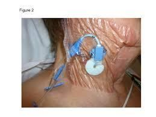
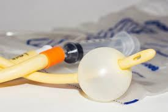
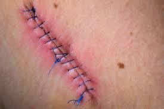
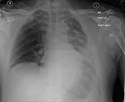
Invasive devices create an extra portal of entry. The urinary tract is the most common HAI site, and hand hygiene is the best prevention.
| Bundle | Key points |
|---|---|
| CLABSI | Maximal sterile barriers; avoid femoral site in obese clients; >0.5% chlorhexidine with alcohol. Gauze dressing every 2 days, semipermeable every 7 days, sooner if wet or loose. Scrub the hub with friction |
| CAUTI | Avoid unnecessary catheters, remove early, keep the system aseptic |
| VAP | Hand hygiene, positioning, mouth care, avoid frequent circuit changes, nutrition |
| SSI | Surgical asepsis and preop skin prep; chlorhexidine (CHG) wipes before surgery reduce risk. Most common cause: S. aureus. Superficial SSIs appear within 30 days, deep within 30 or 90 days |
MDROs resist one or more classes of antimicrobials and respond to only 1–2 drugs. Use contact precautions. MRSA is treated with vancomycin or linezolid. Teach clients to finish the full antibiotic course.
- MRSA: methicillin-resistant Staphylococcus aureus
- VRE: vancomycin-resistant Enterococcus
- VRSA: vancomycin-resistant S. aureus
- VISA: vancomycin-intermediate S. aureus
- ESBL: extended-spectrum beta-lactamase–producing organisms
- MDRSP: multidrug-resistant Streptococcus pneumoniae
Enhanced barrier precautions (nursing homes): gown and gloves for high-contact care like bathing, toileting, wound care, and transfers.
Quick check
A client has a draining wound. Which link do you break with a dressing?
Portal of exit. Containing drainage keeps the pathogen from leaving the reservoir.
Soap and water or hand sanitizer after caring for a client with C. diff?
Soap and water. Alcohol doesn't remove spores.
Which precautions need a negative-pressure room?
Airborne (TB, measles, varicella). Protective isolation uses positive pressure.
Which PPE comes off first?
Gloves, then goggles or face shield, then gown, then mask, then hand hygiene.
Fever, aches, and malaise but nothing disease-specific yet. Which stage?
Prodromal.
Tissue integrity
The skin, how it breaks down, how to stage and care for wounds, and what can go wrong.
Skin structure and function
| Layer | What's in it | Job |
|---|---|---|
| Epidermis | Keratinocytes, melanocytes, Merkel and Langerhans cells | Blocks water loss and pathogens; melanin absorbs UV; light touch; immune response |
| Dermis | Collagen, elastin, vessels, fibroblasts | Strength and elasticity; wound healing |
| Subcutaneous | Adipose tissue | Insulation, shock absorption, padding |
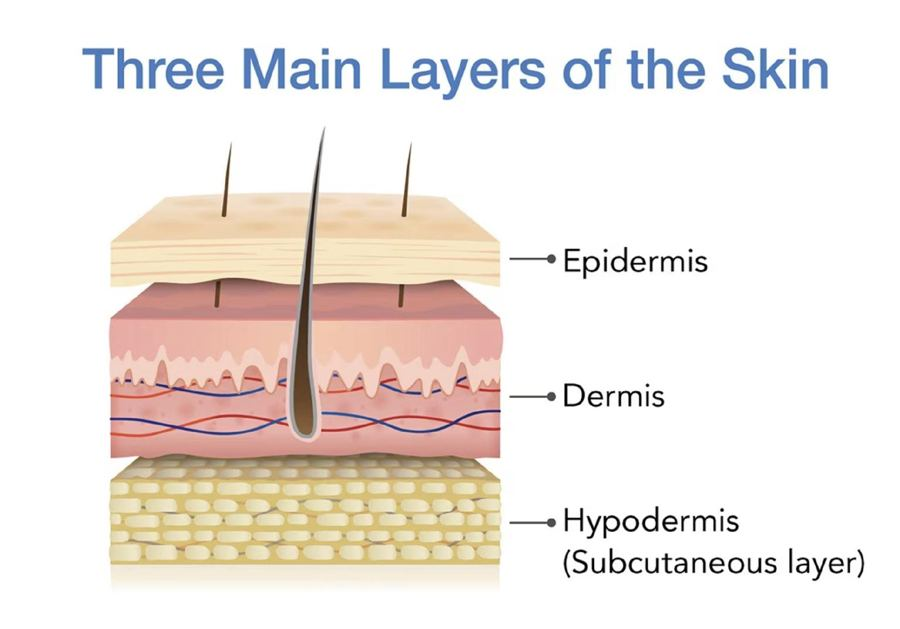
Skin functions: barrier against injury, infection, UV, and temperature changes; sensation; waste elimination; vitamin D synthesis.
Highest risk ages: early and late life. Older adults have thinner skin with less collagen, elasticity, padding, blood supply, and hydration, so they get skin tears (often from tape) and pressure injuries. Obese clients are at risk from moisture in skin folds. Moisture-associated skin damage (MASD) is skin damage from urine, stool, effluent, or exudate.
Assessing skin color
| Finding | Light skin | Dark skin: where to look | Means |
|---|---|---|---|
| Pallor | Loss of red undertones | Ashen gray in mucous membranes, conjunctiva | Anemia, shock, poor blood flow |
| Cyanosis | Bluish | Palms, soles, conjunctiva, nail beds, lips, oral mucosa | Hypoxia: the priority |
| Jaundice | Yellow-orange | Sclera, hard palate, palms, soles | Liver dysfunction |
| Erythema | Redness | Hard to see: palpate for warmth and firmness | Inflammation |
| Ecchymosis | Red or blue bruise | Darker area; tender | Bleeding under skin |
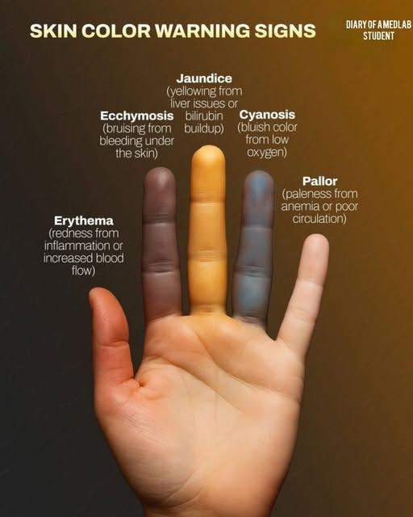
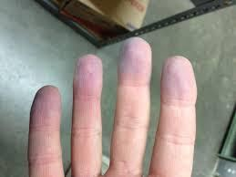
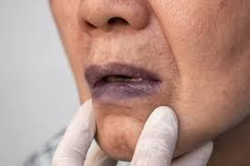
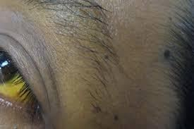
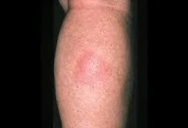
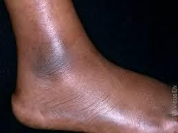
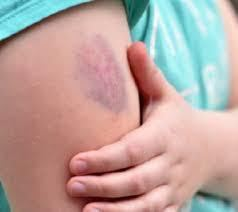
Blanchable erythema turns white when pressed and comes back. Nonblanchable stays red and means small-vessel damage. Feel temperature with the back of your hand: warm = inflammation, cool = poor blood flow.
Also check: turgor (tenting = dehydration; unreliable in older adults), capillary refill (<3 sec), clubbing (nail angle >160°).
Pitting edema
- 1+ = 2 mm, rapid
- 2+ = 4 mm, 10–15 sec
- 3+ = 6 mm, prolonged
- 4+ = 8 mm, prolonged
Pulses
- 0 = absent
- 1+ = diminished
- 2+ = expected
- 3+ = increased
- 4+ = bounding
- Palpate carotids one side at a time
Arterial vs venous insufficiency
- Arterial (poor blood flow to the legs): skin on the feet and toes is shiny, translucent, and hairless
- Venous (poor blood return from the legs): brown skin discoloration
Skin lesions
Primary (from healthy skin)
- Macule: flat, <1 cm (freckle, petechiae)
- Papule: raised, solid, <1 cm (raised mole)
- Nodule: firm, deep, 1–2 cm (wart)
- Vesicle: serous fluid (blister, herpes)
- Pustule: pus (acne)
- Tumor: solid mass >1–2 cm
- Wheal: edematous (insect bite)
- Atrophy: thin, shiny skin
Secondary (change in a primary)
- Erosion: lost epidermis, moist
- Excoriation: scratch-type surface loss
- Crust: dried blood, serum, or pus (scab)
- Scale: flaking (psoriasis, dandruff)
- Fissure: linear crack (tinea pedis)
- Ulcer: open sore; epidermis and dermis lost (pressure injury)
- Scar: fibrous tissue
ABCDE for skin cancer: Asymmetry, Border irregularity, Color variation, Diameter >6 mm, Evolving.
Expected aging: thin, dry, wrinkled, less elastic skin. Hematomas and petechiae are not expected.
Pressure injuries
Localized damage to skin and tissue from pressure, or pressure plus shear, usually over bony prominences or medical devices. Most at risk: heels, toes, sacrum, hips, elbows, shoulders, back of head. Deep damage may not show for 24–72 hr.
Pressure
- Body weight pressing tissue against a surface
- Ex: bony prominences pressing into the bed
Shear
- Skin stays put while deeper tissue slides down
- Ex: sliding down in bed in high-Fowler's
Friction
- Rubbing damages the epidermis
- Doesn't directly cause a pressure injury
- Ex: toes rubbing under the blanket
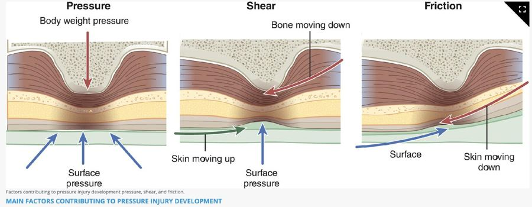
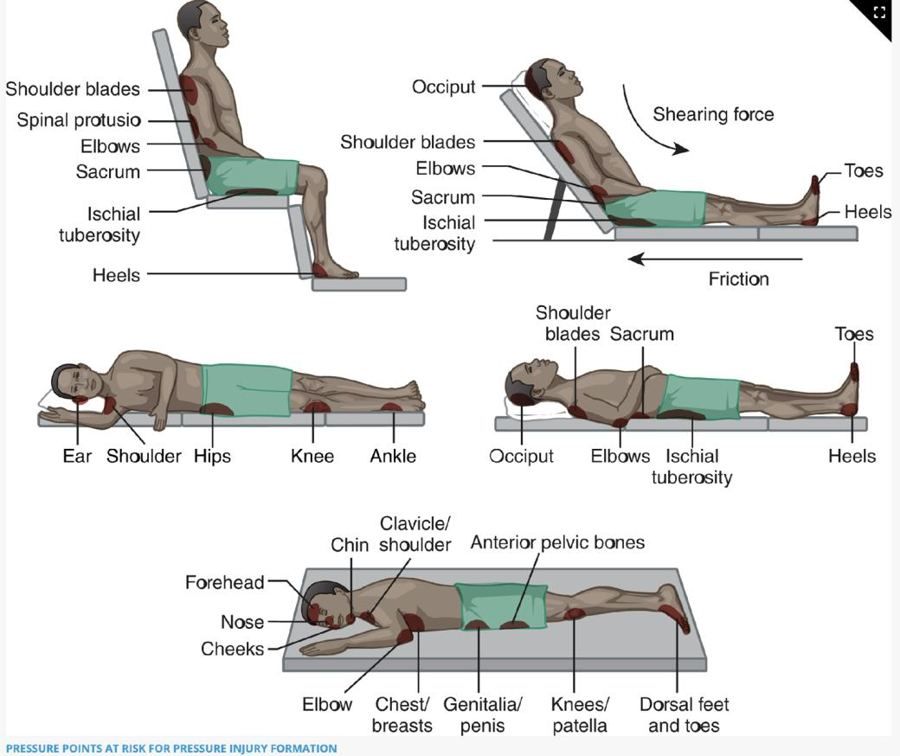
Top risk factors: immobility, malnutrition, reduced perfusion, sensory loss, decreased level of consciousness.
Braden Scale: 6 categories (sensory perception, moisture, activity, mobility, nutrition, friction and shear). Scores 6–23; lower score = higher risk.
Staging
Know every stage, plus unstageable and deep tissue pressure injury (DTPI). Expect picture-style staging questions.
| Stage | What you see | Treatment |
|---|---|---|
| Stage 1 | Intact skin, nonblanchable erythema; may be warmer or cooler | Relieve pressure, reposition |
| Stage 2 | Partial thickness, exposed dermis; pink-red moist bed or intact/ruptured blister. No slough or fat | Moist healing (hydrocolloid) |
| Stage 3 | Full-thickness skin loss; fat visible; may have granulation, rolled edges, slough, tunneling. No bone | Clean or debride; antimicrobials |
| Stage 4 | Full-thickness skin and tissue loss; bone, tendon, muscle, cartilage exposed | Clean or debride; antimicrobials; possible grafts |
| Unstageable | Slough or eschar hides the bed; turns out to be stage 3 or 4 | Debride until it can be staged. Leave stable heel eschar alone |
| Deep tissue pressure injury (DTPI) | Persistent nonblanchable deep red, maroon, or purple; intact skin or blood blister | Relieve pressure |
1 red, 2 pink and shallow, 3 fat, 4 bone. Can't see the bottom? Unstageable. Purple, bruise-like, and intact? Deep tissue pressure injury.
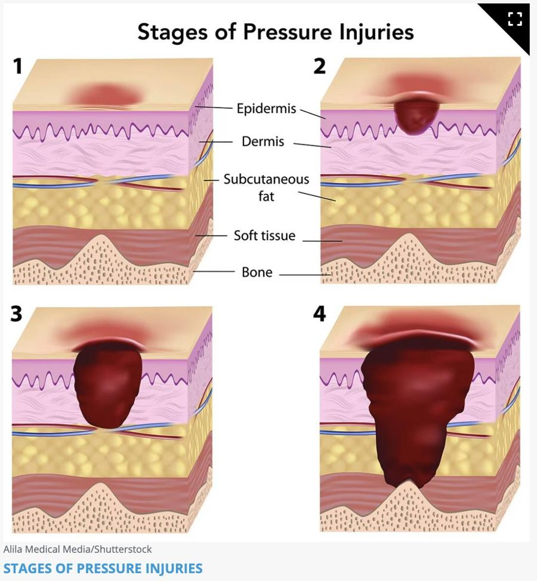
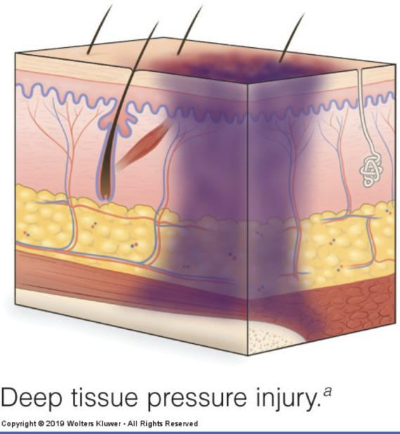
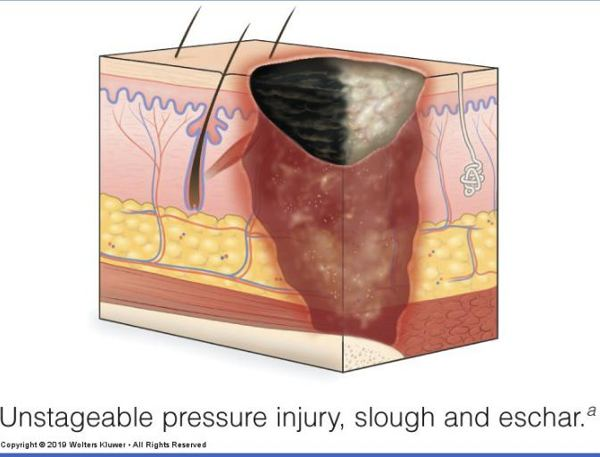
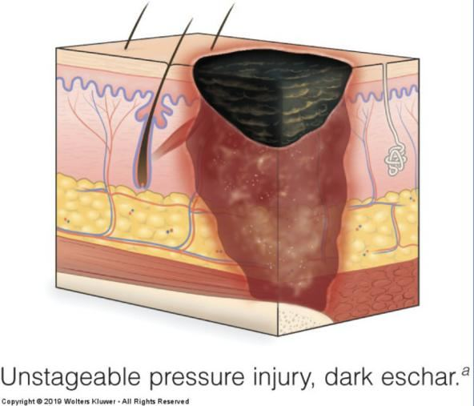
Practice: stage these from the photos
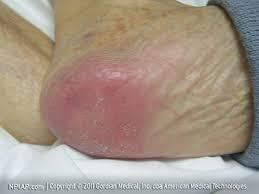
Photo 1: what stage?
Stage 1: intact skin, nonblanchable redness
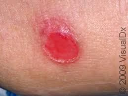
Photo 2: what stage?
Stage 2: shallow, pink, partial thickness
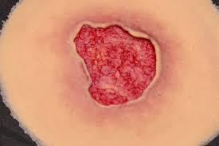
Photo 3: what stage?
Stage 3: full-thickness skin loss, no bone or tendon visible
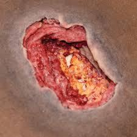
Photo 4: what stage?
Stage 4: deep tissue loss with structures exposed
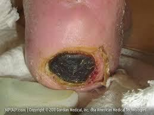
Photo 5: what stage?
Unstageable: eschar covers the wound bed
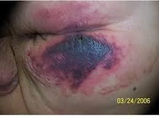
Photo 6: what stage?
Deep tissue pressure injury: deep purple-maroon discoloration
Device-related injuries take the shape of the device. Mucosal injuries from devices can't be staged. Hospital-acquired pressure injuries (HAPIs): CMS limits payment for stage 3 and 4.
Dark skin: temperature and moisture changes may come first; also check for hardness, edema, pain, and areas darker than surrounding skin.
Document: location, stage, size, tissue, wound bed color, edges, surrounding skin, undermining and tunneling, drainage, odor, pain.
Prevention
- Reposition at least every 2 hr in bed, every 1 hr in a chair; weight shifts every 15 min if able
- Side-lying at a 20–30° tilt; head of bed 30° or lower
- Lift, don't pull; raise heels off the bed
- Pressure-redistributing mattress; gel, air, or foam seat cushion
- Silicone foam dressing on sacrum and heels within 24 hr of admission
- Incontinence: gentle cleanser, tepid water, pat dry, dimethicone barrier
- Assess skin on admission (within 24 hr) and with every change in condition
Massage bony prominences, use powder or cornstarch, or clean a pressure injury with cytotoxic cleansers (povidone-iodine, hydrogen peroxide, alcohol, Dakin's).
Wound assessment
| Exudate | Looks like |
|---|---|
| Serous | Clear to light yellow, watery |
| Serosanguineous | Pale pink, watery |
| Sanguineous | Red; bright = active bleeding, dark = old |
| Purulent | Thick; yellow, tan, green, or brown; may smell. Infection: report it |
| Purosanguineous | Pus mixed with blood; newly infected wound |
RYB: Red = healthy, cover it. Yellow = slough, clean it. Black = eschar, debride it.
Measuring: length head-to-toe, width side-to-side, depth at the deepest point, all in cm. Use the same method every time. For tunneling and undermining, use the clock: 12:00 is toward the head. Depth: premoistened sterile applicator until resistance.
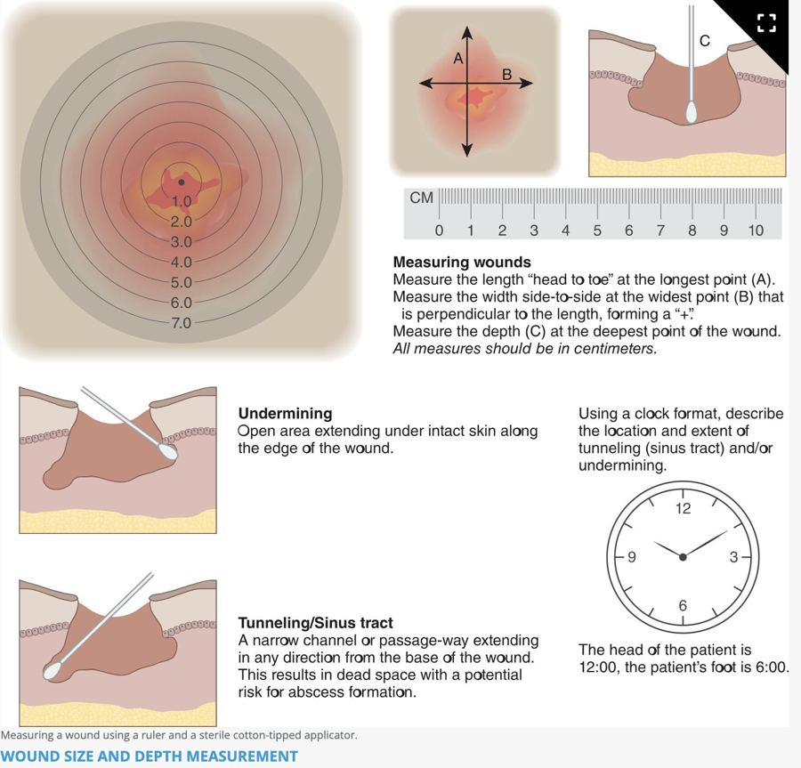
Expected incision: red days 1–4, bright pink days 5–14, pale pink day 15 to 1 year. Edema and drainage resolve by postoperative day 5.
Wound care
Debridement removes dead tissue: surgical (scalpel or scissors) or biological (medical-grade maggots). Irrigation usually uses 0.9% NaCl at 5–8 psi (30–60 mL syringe with a 19-gauge needle), tip 1 in above the wound, until it runs clear. Clean from least to most contaminated with a new gauze each stroke.
A healing wound bed should be moist, not wet. Use sterile technique for the first 24–48 hr after surgery, then clean technique.
| Dressing | Use for | Remember |
|---|---|---|
| Gauze (nonocclusive) | Wet-to-dry debridement | Pulls out healthy tissue too; painful |
| Transparent film | Superficial, minimal drainage | See-through; leaks with heavy drainage |
| Hydrocolloid | Stage 2, small abrasions, superficial burns | Stays 3–5 days; yellow smelly gel is expected, not pus |
| Alginate | Moderate to heavy drainage | Stops bleeding; packs wounds; needs a cover dressing |
| Hydrofiber | Moderate to heavy drainage | Less maceration than alginate |
| Foam | Mild to moderate drainage | Prevents HAPIs on sacrum and heels |
| Hydrogel | Dry or necrotic wounds | Adds moisture; soothing; not for heavy drainage |
| Antimicrobial | Infected or at-risk wounds | Iodine, silver, honey; check iodine and bee-sting allergies |
Semiocclusive dressings allow some gas exchange; occlusive dressings seal completely.
Closures
- Staples: faster to place; removed in 7–14 days; not on the face or neck
- Nonabsorbable sutures: out by day 14
- Skin adhesive: small straight wounds, not over joints; 3–4 layers, hold edges 1 min each; peels off in 5–10 days
- Negative pressure wound therapy (NPWT): wound vac; foam plus a sealed dressing under suction; reduces edema and builds granulation
- Montgomery straps: tie-closed adhesive strips that hold dressings needing frequent changes, so tape doesn't come off the skin each time
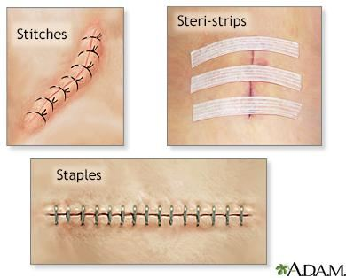
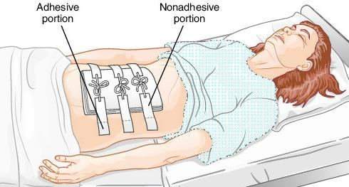
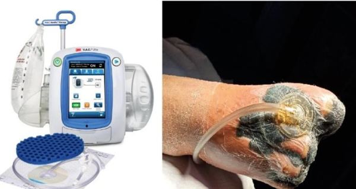
Drains
Penrose: open, passive drain held with a safety pin. No collection chamber, so drainage soaks into gauze around it.
| Drain | Open or closed | Passive or active | Care |
|---|---|---|---|
| Penrose | Open | Passive (gravity) | Gauze around it; sterile dressing 24–48 hr |
| Bulb suction (JP) | Closed | Active (suction) | Empty every 8 hr or when more than half full; squeeze flat, then plug |
| Large bottle | Closed | Active | Large volumes; change when half full |
| Circular portable | Closed | Active (spring) | Empty, wipe plug with alcohol, squeeze flat, replug |
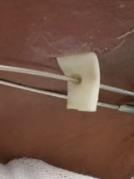
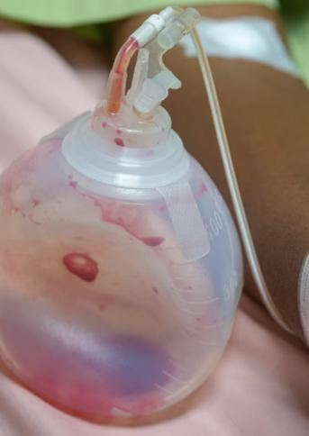
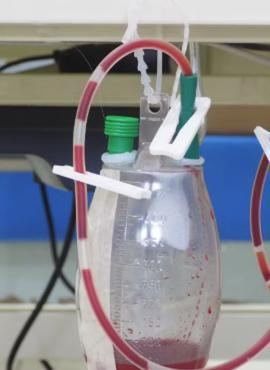
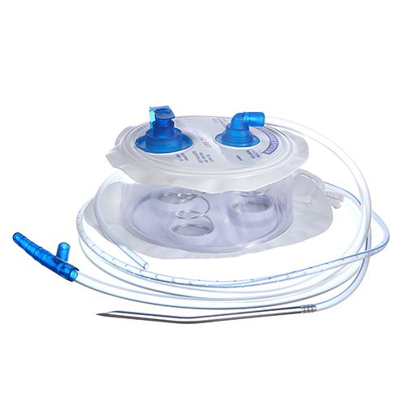
Penrose = Pin, Passive, oPen. If it has a bulb, bottle, or spring, it's closed and active.
Drainage goes from sanguineous to serosanguineous. Call the provider for a big change in amount, clots, signs of infection, or accidental removal. Some tenderness the first few days is expected.
Wound healing
Know the three types of healing.
| Type | What happens | Example |
|---|---|---|
| Primary intention | Clean edges closed right away; fastest; low infection risk; minimal scar | Sutured or stapled incision; laceration with glue |
| Secondary intention | Left open; fills with granulation from the bottom up; slower; higher infection risk; scar | Pressure injury, open burn |
| Tertiary intention | Left open 5–10 days, then closed (delayed primary closure) | Abdominal wound left open until infection clears |
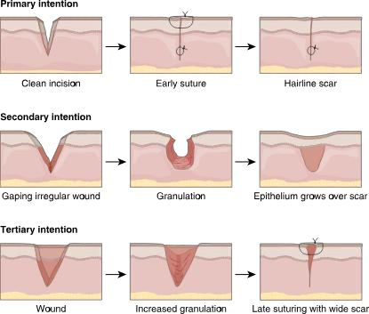
Phases
- Inflammatory (hemostatic): bleeding stops, then WBCs clean the wound
- Proliferative: granulation tissue and collagen fill in; edges contract
- Remodeling: stronger collagen forms, but the scar stays weaker than the original skin
What helps and what hurts
Needs: protein, vitamins A and C, zinc; at least 2,500 mL/day fluid (unless contraindicated) and at least 1,500 kcal/day. Albumin below 3.5 g/dL increases risk.
Delays healing: diabetes (poor perfusion and sensation), infection, corticosteroids (block collagen), anti-inflammatories and antineoplastics, malnutrition, necrosis, hypoxia, multiple wounds, obesity, smoking, low hemoglobin, coughing or vomiting (wound stress), older age.
"Drugs" does not mean every medication. The ones ATI names are systemic corticosteroids (block collagen and fibroblasts), anti-inflammatories, and antineoplastics (chemo). In an ATI practice question, a client taking medication for depression was not a correct answer for poor wound healing.
Complications
| Complication | When / signs | Nursing action |
|---|---|---|
| Infection | Days 2–11; purulent drainage, redness, warmth, odor, fever, ↑ WBC | Culture first, then antibiotics; aseptic dressing changes |
| Dehiscence | Days 5–8; edges separate; ↑ serosanguineous drainage; "popping" with coughing | Notify provider; sterile saline-moistened dressing; prepare for surgery |
| Evisceration | Organs protrude: emergency | See steps below |
| Hemorrhage | Highest risk 24–48 hr after surgery | Pressure dressing, notify provider, monitor vitals |
| Hematoma | Red or blue bruise-like collection of blood; anticoagulants and obesity raise risk | Monitor small ones; large ones may be drained |
| Fistula | Abnormal tract between two organs or an organ and the skin | Report and monitor |
Evisceration: what to do
- Call for help and stay with the client
- Cover with sterile saline-soaked dressings. Never push organs back
- Supine with hips and knees bent
- NPO and watch for shock
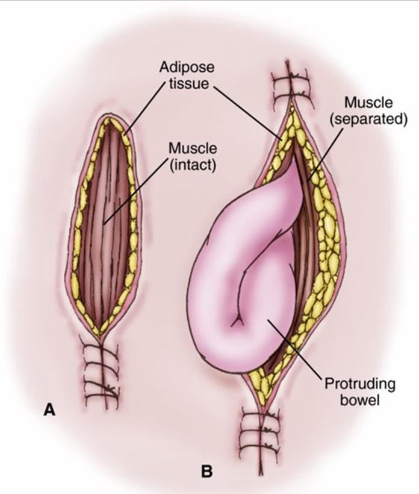
Prevent it: splint the incision with a pillow when coughing. Risk factors include obesity, abdominal surgery, straining, malnutrition, infection, and radiation. A binder helps prevent, not treat, evisceration.
SSIs: superficial within 30 days, deep within 30 or 90 days. Most common cause: S. aureus. Chlorhexidine wipes before surgery reduce risk.
Quick check
Full-thickness skin loss with visible fat but no bone. Stage?
Stage 3.
A heel wound is covered in stable black eschar. Remove it?
No. It's unstageable, and stable heel eschar is left in place.
An open pressure injury heals by which intention?
Secondary. It's left open and fills in with granulation.
Which drain is open and passive?
Penrose.
Organs are protruding from an abdominal incision. First thing to do?
Call for help, stay with the client, and cover with sterile saline-soaked dressings.
Specimen collection
Who can collect what, how much you need, and how to keep it uncontaminated.
Delegation
The UAP can collect an occult blood specimen but cannot do the point-of-care test. Throat cultures and nasal swabs are never delegated.
| Task | Delegate to UAP? |
|---|---|
| Stool specimen for occult blood | Yes, collection only |
| Point-of-care occult blood test | No |
| Urine specimens | Yes |
| Capillary blood glucose | Usually yes |
| Throat culture | No |
| Nasal swab | No |
Blood specimens
Capillary (fingerstick)
- Usual site: fingers. Alternatives: palms, forearms, earlobes
- Clean with facility antiseptic or soap and water; choose a vascular site
- Poor circulation? Have the client warm their hands or let them dangle
- Lancet on the side of the finger, not the central tip (more nerves there)
- Don't milk the finger: it can lyse (break) blood cells and alter results
- Wipe away the first drop; apply blood when the meter prompts
- Hold a tissue or cotton ball on the site; usually no bandage needed
- Document method, client tolerance, and findings
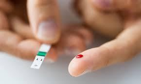
Blood glucose meters
Expected fasting glucose: 74–106 mg/dL. Readings below 60 or above 400: retest and possibly send a sample to the lab, since bedside meters are less accurate than lab testing. Store strips closed at room temperature, check the expiration date, and match lot numbers; poor storage causes falsely high or low readings.
Venipuncture
- Explain the procedure; choose a vein in the arm or hand (a transilluminator can help)
- Tourniquet above the site; client pumps the hand; stroke distal to proximal, no vigorous rubbing
- Remove the tourniquet once the site is chosen; clean with antiseptic and let it dry completely
- Draw into evacuated tubes (cap color = which test); bandage the site and document
Needle gauge: the larger the number, the smaller the opening (18-gauge is bigger than 22-gauge). Butterfly needles are smaller and less painful for children or needle-averse clients but can lyse cells for some tests.
Stool
- Amount: formed stool 1 inch (walnut-sized); liquid stool 15–30 mL
- Have the client urinate first, then deposit stool in a dry, clean container. No urine, water, or toilet tissue
- Transfer with a tongue blade; some tests need a preservative (keeps parasites alive)
- Ova and parasites: three separate specimens
- Testing for C. diff? Contact isolation until results come back
- Infants: apply a urine bag, then collect urine-free stool from the diaper
Fecal occult blood test (FOBT)
Also called a guaiac test. Screens for colorectal cancer and detects GI bleeding. Recommended for clients over 50 before colonoscopy; three home samples are more accurate than one office test. Only valid for stool, not gastric contents.
| Before the test | Stop or avoid |
|---|---|
| Medications | Aspirin, iron, NSAIDs, anticoagulants: 7 days before |
| Foods | Red or rare meat, poultry, fish, beets, radishes, melon, some raw vegetables: 3 days before |
| Vitamin C | 3 days before |
| Bleeding | Wait at least 3 days after menstruation ends; don't collect during hemorrhoid flares |
| Other | No barium tests; avoid mineral oil and laxatives |
Meds wait a week, food and vitamin C wait three.
Dark, tarry stool = bleeding high in the GI tract. Bright red streaks = bleeding low (hemorrhoids, menstrual blood) and may give an inaccurate result.
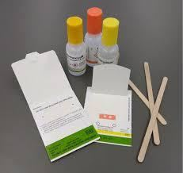
Urine
Document the collection method, client tolerance, and the urine's color, clarity, and odor. Refrigerate or keep on ice until transport.
Clean catch: female
- Separate the labia
- Clean left side, right side, then center, front to back
- New wipe each time
Clean catch: male
- Retract the foreskin
- Clean in a circle from the meatus outward
Both
- Start voiding in the toilet, stop, then void into the cup
- No need to observe unless necessary
Children: sterile receptacle in the toilet. Infants: adhesive collection bag. Never squeeze urine from a diaper.
From an indwelling catheter
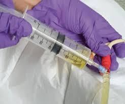
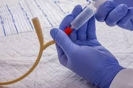
Take urine from a drainage bag that's been connected to the client; it's concentrated or contaminated. Bag urine is OK only when the catheter is first inserted. For a straight cath, let a small amount drain first, then fill the specimen cup.
24-hour urine
- Client voids; discard it and note the start time
- Save all urine for 24 hours, on ice or refrigerated per lab guidelines
- Client voids at the end; include it
- If a void is discarded by mistake, restart the timing. Never take urine out of the container for other tests
Toss the first, keep the last.
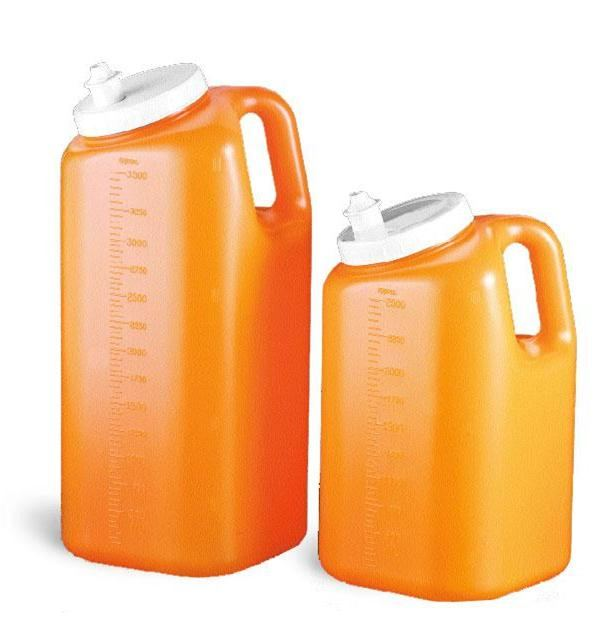
Timed urines (usually 24 hr, sometimes 2 or 12 hr) measure creatinine clearance, protein, or hormones. Pregnancy test: first morning void (detects hCG); document the last menstrual period.
Dipstick (reagent strip)
| Result | Means |
|---|---|
| pH | Expected 4.6–8.0 |
| Specific gravity | Expected 1.005–1.030; high = concentrated (dehydration), low = dilute |
| Leukocytes or nitrites | Infection |
| Blood | Infection, cancer, other pathology |
| Ketones or glucose | Diabetes |
| Bilirubin or urobilinogen | Liver disease or RBC destruction |
Everything except pH and specific gravity should be negative. Dipsticks are screening only; confirm abnormal results with the lab.
Cultures and swabs
Wound culture
- Remove the old dressing; change gloves and perform hand hygiene
- Clean the wound with sterile water or 0.9% NaCl; change gloves again
- Swab clean tissue in the center of the wound, not the edges. Never pooled exudate
- Into the tube, cap it, squeeze to activate the medium
- Label, requisition, biohazard bag, redress, document (vital signs, date, time, location, tolerance)
Collect before broad-spectrum antibiotics; if the client is already on them, note it on the requisition. A Gram stain lets the provider treat sooner than waiting for culture results. Report fever above 104°F (40°C) with hypotension right away: possible sepsis.
Throat culture
- Client sitting upright, head tilted back, tongue out, says "ah"; penlight
- Swab path: right tonsil → right arch → uvula → left arch → left tonsil
- Avoid gums, tongue, teeth, lips, and cheeks. Touched them? Discard and start over
- Epiglottis severely inflamed? Don't swab; notify the provider
- Child: a guardian holds them on their lap with a hand on the forehead
- Point-of-care swab tests are less accurate; confirm positive results
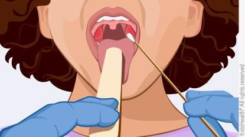
Sputum
- Morning, before eating or drinking
- Rinse with water (no mouthwash), deep breaths, cough; don't touch inside the cup
- Amount: 1–2 teaspoons (5–10 mL)
- Can't produce enough? Chest physiotherapy first; suctioning and transtracheal aspiration are last resorts
- AFB (TB): 3 serial samples in a sterile container. Cytology: needs a preservative; identifies lung cancer type
Suspected TB? Start airborne precautions before anything else, including collecting the sputum.
Quick check
Can the UAP do the point-of-care occult blood test?
No. The UAP can only collect the specimen.
Which meds are stopped 7 days before an occult blood test?
Aspirin, iron, NSAIDs, and anticoagulants.
Where do you get urine from a catheter that's been in for 3 days?
The sampling port, after clamping the tubing and wiping the port. Never the bag.
A glucometer reads 410. Now what?
Retest, and possibly send a blood sample to the lab.
Where on a wound do you swab for a culture?
Clean tissue in the center of the wound, after cleaning it. Not the edges and not pooled exudate.